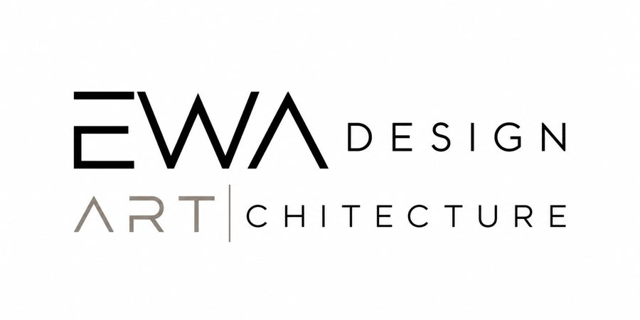
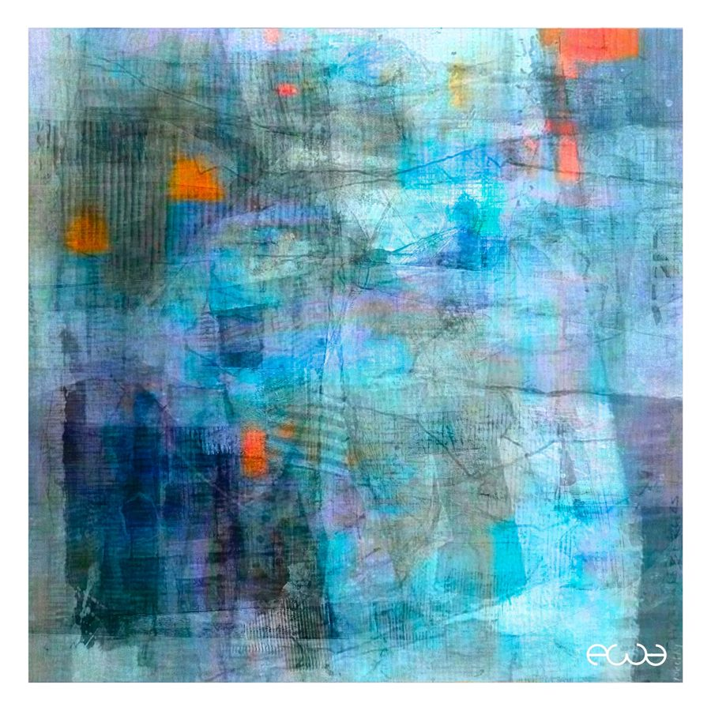
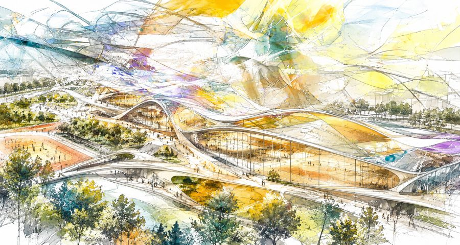
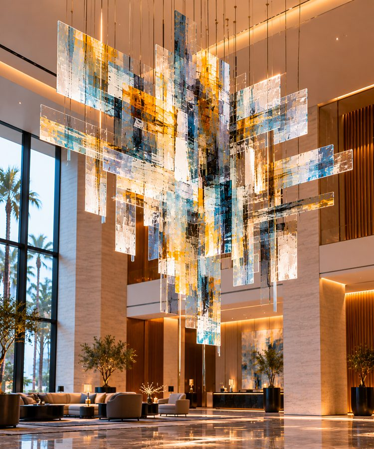
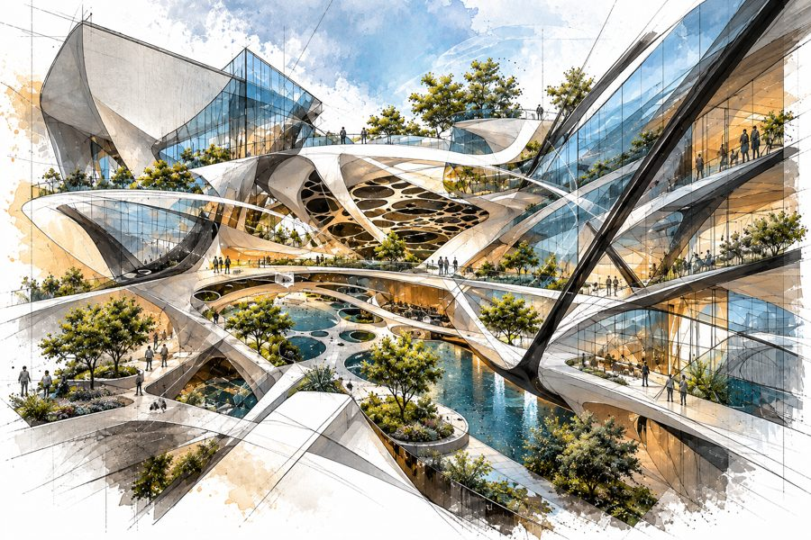

Premier écran de l'accueil (esquisse au rendu final, images réelles du client), palette et typographies. Les œuvres ne sont jamais recadrées ni recolorées.



La barre du logo sépare et relie l'art et l'architecture. Galerie blanche : les estampes très colorées sont les stars.

Estampes, luminaires et architecture : un atelier bordelais qui travaille la lumière.
Voir les œuvresFond de nuit, les luminaires et les œuvres s'allument au passage. Deux sections claires (estampes, contact) pour respirer.

Le non-photoréalisme comme parti pris : des lieux esquissés, des estampes en couches.
Voir les projetsCarnet d'architecte : chaque image arrive en trait puis prend sa couleur au défilement (rendus d'architecture seulement, jamais les œuvres).